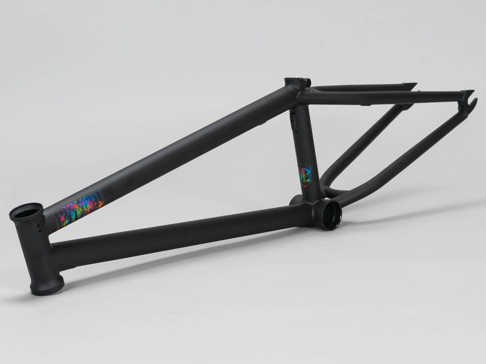

Рама для BMX делаются из расчёта на прочность в сочетании с лёгкостью, поэтому рама BMX имеет очень простую и надёжную конструкцию: два треугольника с общим основанием, крепления для втулки (дропауты), которые могут иметь большую площадь и толщину. Для увеличения прочности используется «баттинг» или вварка дополнительных косынок в задние перья рамы и иногда между главными трубами. Дешёвые рамы для BMX’а делаются из нелегированной стали, а более дорогие — из легированной стали (с добавлением хрома и молибдена), реже из титана или алюминия (последний материал используется для рам BMX racing). В технологии изготовления рам применяют «баттинг» — вытягивание ещё горячих труб. В итоге в местах нагрузки трубы более толстые, а где её мало — тоньше. Вытягивание может быть многоэтапным.
На раме кареточный стакан (под подшипники для оси кареточного вала) может быть четырёх видов:
American (Американка). Самый большой стакан, устанавливается на старые и/или дешёвые велосипеды. Рассчитан на запрессовывание двух чашек под подшипники в комплекте со втулкой между ними, чтобы подшипники стягивались и не ломались при затягивании осевых болтов на валу.
Mid (Мид). Примерно на треть меньше по диаметру, подшипники впрессовываются непосредственно в раму, минуя чашки.
Spanish (Испанка). Этот стакан устроен так же, как и Мид, но является самым маленьким по диаметру.
Euro (Евро). Этот стакан имеет резьбу и рассчитан на установку особой каретки. В ней есть две завинчивающихся в раму чашки, в которые запрессованы четыре подшипника (по 2 на сторону) и втулка между подшипниками. Также данный тип кареточного стакана используется в рамах горного велосипеда.
Колёса на BMX имеют размер 20 дюймов, но встречаются и совсем «детские» версии 18, 16, 14, 12 дюймов. Обода имеют широкий «коробчатый» профиль, бывают одинарные, двойные или даже тройные, большинство предназначено для использования с ободными тормозами. Также для BMX racing используется вытянутые внутрь обода для большей жëсткости при прямых ударов. Количество спиц может быть: 48 — это устаревший вариант; 36.
Покрышки, как правило, слики или полуслики в зависимости от дисциплины, шириной 1,8 — 2,50 дюйма. Рекомендуемое давление в камерах 3-7 атм (300—700 кПа).
На руле ВМХ, как правило, есть кроссбар — перекладина посередине, повышающая прочность руля. Руль может быть сделан двухэлементным и более. Самые популярные рули — двухэлементные (из двух труб) и четырёхэлементные (соответственно, из четырёх). На концах руля, как правило, устанавливаются (натягиваются или если есть такая возможность то накидываются и прикручиваются шестигранником) грипсы — ручки для повышения сцепления рук с рулём и для предотвращения поврежедения пальцев рук при выполнении трюка barspin от английского прокрут руля на 360 градусов и более простых версий трюка такие как chicken bar slide bar. Для того, чтобы при падении руль не прорезал кожу, а также чтобы при падении велосипеда не повреждался руль, на него устанавливаются баренды — заглушки по обеим сторонам руля, бывают с винтами или свободно заходящие — нейлоновые.
Деталь, которая соединяет руль с вилкой. Выполняется в основном из цельного куска алюминия.
Деталь, к которой крепится переднее колесо. Состоит из двух ног, штока и дропаутов (пластины, держащие втулку). Как и на раме, дропауты имеют увеличенную площадь и толщину. Может выполняться из тех же материалов, что и рама, и может быть рассчитана на установку оси в 10 мм, реже — 14 мм.
Пега — карбоновая, металлическая или пластиковая трубка, устанавливающаяся на ось (устанавливаются не всегда). Пеги используют для скольжения на гранях и перилах, а также как дополнительную опору при выполнении трюков. Пеги делают из стали, хромомолибденового сплава, титана и прочного пластика. Пеги бывают длинными, короткими и т. н. «микропегами». Пеги для катания в стиле Flat обычно больше в диаметре, чем стандартные, и имеют цепкую поверхность для предотвращения соскальзывания ноги.
Под системой шатунов понимают вал и два шатуна. Шатунами в велосипедной терминологии ошибочно называют кривошипы, в то время как роль шатунов в данном случае играют голени велосипедиста. В системе на BMX применяется ось 19 и 22 мм. Встречается исполнение в трёх видах:
Систему шатунов различают по типу соединения, которое передаёт крутящий момент на звезду. Они могут быть с четырьмя шлицами (срез оси представляет с собой квадрат), 8, 10,16 и 48-шлицовыми.
Педали для BMX делаются из алюминия, магния или пластмассы. Магниевые педали легче алюминиевых, но более дорогие. Пластиковые педали самые лёгкие, но менее надёжные и имеют худшее сцепление в отличие от алюминиевых или магниевых. На дешёвых педалях обычно стальная ось и насыпные подшипники, на дорогих ось делается из хромомолибденового сплава и установлены промышленные подшипники. На некоторых педалях шипы ввинчиваются шестигранником. Также существуют педали с подшипниками скольжения (Odyssey JC\PC). В BMX racing также используется контактные педали в которые нужно пристëгиваться.
Расположение тормозной системы на раме идёт из расчёта на то, что при кручении руля или рамы вокруг него, тросики тормоза не будут запутываться и терять свою эффективность. В связи с этим, тросик переднего тормоза идёт внутри вилки, а в тормозе на заднее колесо используется специальный механизм — гироротор. Этот элемент расположен на рулевой колонке и представляет собой подшипник с креплениями для тормозных тросиков. На тросиках, до и после гироротора применяются разветвители: первый раздваивает (бочка) тросик, а второй — объединяет (бочка) их в один. Таким образом, на гироротор идут два тросика, расположенных по разным краям, делая нагрузку на него равномерной. Иногда вместо гироротора и разветвителей ставят один длинный тросик, причём такой длины, чтобы руль мог свободно сделать один или несколько полных оборотов. Некоторые BMX райдеры предпочитают вообще не ставить тормозов в целях снижения веса велосипеда или в зависимости от стиля катания. Для BMX racing используется обычные ободные тормоза, реже дисковые.
Корпус втулки в основном выполняется из алюминия. Во втулках для BMX применяются два закрытых промышленных, или насыпных подшипника. Втулка чаще всего имеет ось 10 мм, реже — 14 мм. Наиболее популярен вариант, когда втулку на вилке держат болты, ввинчивающиеся в ось. Втулка рассчитана на 36 спиц, всё реже — на 48.
Корпус задней втулки, как и передней, чаще всего выполняется из алюминия, но может выполняться и из титана. Задние втулки имеют ось 14 или 10 миллиметров, или 3/8 дюйма, и могут удерживаться на раме гайками или болтами. Втулки бывают левосторонние и правосторонние.
Задние втулки различают по сторонам свободного хода: в одну сторону (с использованием храпового механизма) и в две стороны (т. н. «фрикостеры» (англ. Freecoaster, free — свободно, coast — двигаться накатом). Фрикостер позволяет не крутить педали назад при езде задним ходом (Fakie).
Существует три конструкции передачи усилия с цепи на втулку:
Фривил — специальная велосипедная трещотка, навинчивающаяся на корпус втулки. Собачки и зацепы находятся в самом фривиле и закрыты его корпусом. В корпусе самой втулки, в основном, расположены три подшипника, два из них под фривилом. Традиционная конструкция фривила не позволяет сделать его меньше, чем на 13 зубьев (левосторонний фривил с метрической резьбой 30×1), или 16 зубьев (для стандартной английской резьбы 1.37"×24tpi).
У кассетных втулок всегда есть драйвер (англ. Driver - ведущий шкив) — звёздочка с храповым механизмом, передающим крутящий момент с цепи на колесо. Принцип работы втулки схож с принципом фривила, но в отличие от него собачки находятся внутри корпуса втулки. Драйвер или корпус втулки представляет с собой «кассету» для собачек и пружин храпового механизма. В драйвер чаще всего устанавливаются 2 или 3 промышленных шариковых подшипника, но может быть установлен один открытый роликовый или керамический (основанный на трении скольжения). Также применяются комбинации этих решений.
В этих втулках на драйвере вместо собачек нанесена крупная резьба. Внутри корпуса втулки на драйвер накручена специальная гайка. Принцип таков: когда крутятся педали, драйвер «накручивает» на себя гайку, та прижимается к корпусу и крутит колесо. Когда ездок перестаёт крутить педали, гайка чуть-чуть «откручивается» и больше не касается корпуса. При свободном ходе драйвер полностью выходит из зацепления со втулкой, поэтому колесо может крутится в обе стороны, не передавая крутящий момент на педали.